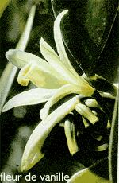

L'euro-vanille Bourbon
En Janvier, c'est l'été. An 2000. C'est l'été mais même si je vous parle de saisons je ne vous parlerais pas du temps qu'il fait. Le nouveau siècle est l'occasion pour beaucoup de réécrire le histoire, ne remarquez vous pas autour de vous les pubs, la mode, les images dans les tons pastels, presques transparents ? Comme si pour se nouveau siècle on nous donnait page preque blanche, on nous laissait le soin de réécrire nos vies…
 Je vais moi aussi réécrire les lois de ce site et vous présentrer un site non Réunionnais. Il s'agit du site web d'un importateur de vanille qui évidement traite avec la Réunion. L'île est la terre d'origine de la Vanille Bourbon dont elle a repris le nom. Aujourd'hui la plus grande quantité de cette «meilleure vanille du monde» est produite à Madagascar mais on continue de cultiver cette célèbre orchidée sur le Nord-Est de l'île, dans les environs de Saint Philippe. Ce site d'eurovanille vous raconte l'histoire de la vanille et vous en décrit toutes les variétés. Il détaille la culture de la fleur à la gousse et vous explique les méthodes de préparation. Cet exotique détour en métropole vallait bien la peine.